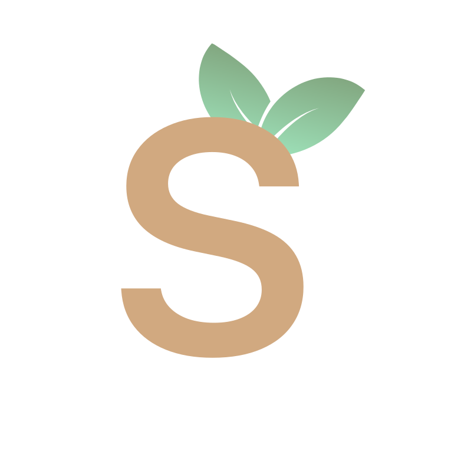

Talk it through.
Switch between text and voice. Ask follow-up questions and get explanations in the language you’re comfortable with.
“Why does this work?”“Let’s break it down together.”

scoleaf✳A PERSONAL VOICE AI TUTOR
Turn your PDFs into a conversation. Ask a question, talk it through, and see the explanation unfold right on the page.
A project by Charvi Kusuma · Voice, documents, and visual learning
Attention connects a word to the context that matters.
“Can you explain this another way?”
BUILT AROUND THE WAY YOU LEARN
Scoleaf pairs your reading material with an AI conversation, so questions and explanations stay connected to the source.
Switch between text and voice. Ask follow-up questions and get explanations in the language you’re comfortable with.
Upload a PDF and explore it beside your conversation. Relevant passages can be highlighted and brought into view.
Use diagrams, illustrations, and equations to work through ideas that are easier to understand visually.
Organize document highlights into General, Important, and Thoughts categories, with conversation context across follow-up questions.
FROM THE PROJECT
A recorded walkthrough of the learning experience.
This project page showcases the app; it does not run a live tutor.
UNDER THE HOOD
A React and TypeScript interface meets a Python backend, with document processing and real-time voice working together.
React · TypeScript · Tailwind CSS · Zustand
Google Gemini · LiveKit · Mermaid
Python · FastAPI · PyMuPDF · Supabase